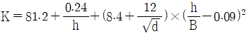
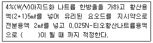

1과목: 수질오염개론
1. 수중의 CO2농도나 암모니아성 질소가 증가하며 Fungi가 사라지는 하천의 변화과정 지대는? (단, Whipple의 4지대 기준)
2. 수분함량 97%의 슬러지 14.7m3를 수분함량 70%로 농축하면 용적은?
3. 20℃에서 K1 이 0.16/day이라 하면 실제 온도가 10℃일 때 탈산소계수는? (단, 온도보정계수θ는 1.047이다)
4. 지하수의 특성을 설명한 것 중 옳지 않은 것은?
5. pH 2.8인 용액중의[H+]은 몇 mg/ℓ인가?
6. 이상적 plug flow에 관한 내용으로 알맞지 않은 것은?
7. 강물의 유량조사를 위하여 500mg/L의 추적자(tracer)를 500L/min의 유량으로 주입시켰다. 그 결과 측정지점에서의 추적자 농도는 200mg/L인 것으로 조사되었다. 원래 강물의 추적자 농도가 50mg/L 였다면 이들 자료에서 강물의 유량은?
8. 수소이온 농도가 2.0 × 10-5mol/L이면 pH는?
9. 0.3N의 BaCl2ㆍ2H2O(분자량 = 244.4g) 용액 250㎖를 만드는데 필요한 BaCl2ㆍ2H2O의 양(g)은?
10. 초기농도가 300mg/L인 오염물질이 있다. 이물질의 반감기가 10day 라고 할 때 반응속도가 1차 반응에 따른다면 1일 후의 농도는?
11. Glucose(C6H12O6) 200mg/L 용액을 호기성 처리시 필요한 이론적 인(P) 량(mg/L)은? (단, BOD5: N: P = 100: 5: 1 , K1 = 0.1 day-1, 상용대수기준)
12. THM(Tri Halo Methane)의 생성에 관한 것 중 옳지 않은 것은?
13. 해수의 특징에 관한 설명 중 틀린 것은?
14. 1000m3인 탱크에 염소이온 농도가 100mg/L이다. 탱크 내에 물은 완전혼합이고, 계속적으로 염소이온이 없는 물이 480m3/day로 유입된다면 탱크내 염소이온농도가 10mg/L로 낮아질 때까지의 소요시간(hr)은?
15. Mg(OH)2 232 mg/L 용액의 pOH는? (단, g(OH)2는 완전해리 하며 M.W = 58)
16. 친수성 콜로이드에 관한 설명으로 알맞지 않은 것은?
17. Formaldehyde(CH2O)의 COD/TOC의 비는?
18. 해수의 화학적 특성 중에서 영양염류의 농도는 매우 중요하다. 다음 중 영양염류가 찬 바다에 많고 따뜻한 바다에 적은 이유로 틀린 것은?
19. 물의 물리적 성질을 나타낸 것 중 틀린 것은?
20. Kolkwitz 와 Marson의 4지대에서 초록색으로 나타내는 수역은?
2과목: 수질오염방지기술
21. 유량이 400,000m3/day이고 BOD가 1.2mg/ℓ인 하천에 인구 15만명의 도시에서 50,000m3/day의 하수가 배출되고 1인당 1일 BOD 배출 원단위를 50g 이라고 가정할 때 하수처리장을 건설하여 BOD 제거율을 얼마로 해야 처리된 하수가 하천으로 유입된 후 (완전혼합으로 가정) BOD를 2.0ppm으로 유지할 수 있는가?
22. BOD가 940mg/L, SS가 15 mg/L,질소분 5mg/L, 인(P)분 55mg/L인 폐수를 활성 슬러지법으로 원활히 처리하기 위해 공급해야 하는 요소의 량(mg/L)은? (단, 요소 : CO(NH2)2 , BOD: N: P = 100: 5: 1)
23. 고형물의 농도가 15%인 슬러지 100kg을 건조상에서 건조시킨 후 수분이 7%로 나타났다. 감소된 물의 양은? (단, 슬러지 비중 1.0)
24. 생물막법인 접촉산화법의 장점으로 틀린 것은?
25. BOD 1000mg/ℓ, 폐수량 1000m3/일의 공장폐수를 BOD용적부하 0.4kg/m3ㆍ일의 활성슬러지법으로 처리하는 경우 포기조의 수심을 4m로 하면 포기조의 표면적은?
26. MLSS농도가 4000mg/ℓ이고 30분 침강후의 슬러지 용적이 25%(SV30)인 경우 활성슬러지의 SVI는?
27. 유입폐수의 유량이 2,000m3/day, 포기조 내의 MLSS농도가 4,500mg/ℓ 이며 포기시간은 12시간, 최종침전지에서 매일 50m3의 잉여슬러지를 인발한다. 이 때 잉여슬러지의 농도는 50,000mg/ℓ이며 방류수의 SS는 무시한다면 슬러지체류시간(SRT)는?
28. 유해물질인 시안처리방법과 가장 거리가 먼 것은?
29. 부피가 1000m3인 탱크에서 G(평균속도경사)값을 30/s 로 유지하기 위해 필요한 이론적 소요동력(W)은? (단, 물의 점성계수는 1.139× 10-3 Nㆍ s/m2)
30. 1차, 2차, 3차 순으로 처리하는 어느 폐수처리장이 있다. 이 처리장의 1차 처리효율이 30%, 2차 처리효율이 80%, 3차 처리효율이 50% 이었다면 전체 처리효율은?
31. 폐수의 고도처리에 관한 기술 중 잘못된 것은?
32. 하수처리시 소독 방법인 자외선 소독의 장점으로 틀린 것은? (단, 염소 소독과의 비교)
33. 폭기조 내의 MLSS가 4000mg/L 폭기조 용적이 500m3인 활성슬러지법에서 매일 50m3의 폐슬러지를 뽑아 소화조로 보내 처리한다면 세포의 평균체류시간은? (단, 반송슬러지 농도는 2%, 비중은 1.0 , 유출수내 SS 농도 고려안함)
34. 유량 0.2m3/sec가 평균길이가 100m, 평균 폭이 80m, 평균수심이 4m인 저수지에 연속적으로 유입되고 있다. 저수지의 수위가 일정하게 유지된다면 이 저수지의 평균 수리학적 체류시간은?
35. 어떤 공장에서 0.1%의 NaOH를 함유한 알칼리성 폐수를 배출하고 있다. 이 폐수를 완전 중화하는데 폐수 100m3당 37% HCl(비중 1.18)의 필요한 량은? (단, 폐수의 비중은 1.0이라 한다. Cl 원자량 : 35.5 , Na 원자량 : 23)
36. 슬러지 건조고형물 무게의 2/3가 유기물질, 1/3이 무기물질이며 이 슬러지 함수율은 80% , 유기물질 비중은 1.0 ,무기물질 비중은 2.5라면 슬러지 전체의 비중은?
37. 흡착 실험식인 Langmuir식이 유도되기 위한 가정으로 알맞지 않는 것은?
38. 생물학적 처리공정에서 질산화 반응은 다음의 총괄반응식으로 나타낸다. NH4+ + 2O2 → NO3- + 2H+ + H2O NH4+ 1g이 산화되는데 요구되는 산소(O2)의 양을 화학 양론적으로 계산하면 얼마인가?
39. 5000m3/d 의 유량인 하수에 인이 10mg/L들어있다. 인 1kg 침전시키는데 액체명반 0.87kg이 필요하다면 하수에서 인을 완전히 제거 침전시키는데 필요한 액체명반의 양은? (단, 액체명반: Al2(SO4)3ㆍ18H2O, 분자량: 667, 단위중량 : 1200kg/m3)
40. 하수 고도처리공법 중 혐기무산소호기조합법에 관한 설명으로 틀린 것은?
3과목: 수질오염공정시험방법
41. 흡광광도법에 관한 설명 중 옳지 않은 것은?
42. 수질오염공정시험방법의 총칙에 관한 다음 설명 중 잘못된 것은?
43. 웨어(weir)의 수두가 0.2m, 수로의 폭이 0.5m, 수로의 밑면에서 절단 하부점까지의 높이가 0.8m인 직각 삼각웨어의 유량은? (단, 유량계수

)44. 전기전도도에 관한 설명 중 알맞지 않은 것은?
45. 식물성 플랑크톤(조류)분석에 관한 설명으로 알맞지 않은 것은?
46. 수질오염공정 시험방법의 총칙 설명에서 옳지 않은 것은?
47. 디페닐카르바지드를 작용시켜 생성되는 적자색의 착화합물의 흡광도를 540nm에서 측정하여 정량하는 항목은?
48. 분원성 대장균군 시험에 관한 설명으로 틀린 것은?
49. 수로의 형상, 구배등이 일정하지 않는 개수로에서 부표를 사용하여 유속을 측정한 결과 수로의 평균 단면적이 1.6m2, 표면최대유속은 2.4m/sec 이다. 이 수로에 흐르는 유량 (m3/min)은?
50. 채취된 시료수에 다량의 점토질 또는 규산염을 함유한 경우, 시료의 적용되는 전처리 방법은?
51. 수질오염공정시험법에 의해 분석할 시료채취량은 시험항목 및 시험횟수에 따라 차이가 있으나 보통 몇 ℓ 정도를 채취하는가?
52. 알칼리성 100℃에서 과망간산칼륨에 의한 화학적 산소요구량측정방법의 일부분이다. 괄호안에 알맞은 색깔은?

53. 아질산성 질소와 질산성 질소 측정에 적용되는 방법은?
54. BOD를 측정할 경우 시료의 전처리에 대한 설명이다. 틀린 것은?
55. 0.025N-KMnO4 수용액 500mL를 조제하려면 KMnO4 몇 g이 필요하겠는가? (단, ,KMnO4의 분자량 = 158)
56. 투명도 측정에 관한 설명으로 맞는것은?
57. 노르말 헥산 추출 물질량을 측정할 때 시험과정 중 지시약으로 사용되는 것은?
58. 가스크로마토그래피법에서 흡착형 충전물이 아닌것은? (단, 기체- 고체크로마토그래피법)
59. 부유물질에 관한 사항 중 옳은 것은?
60. 측정항목에 따른 시료의 보존방법이 다른 것으로 짝지어진 것은?
4과목: 수질환경관계법규
61. 특례지역의 기본부과금 지역별 부과계수는?
62. 일일유량의 산정방법은 일일유량 = 측정유량 × 일일 조업시간으로 한다. 이때 측정유량의 단위는?
63. 폐수처리업의 등록 취소에 해당되는 사유와 가장 거리가 먼것은?
64. 수질환경보전법에서 사용되는 용어의 정의로 틀린 것은?
65. 수질오염 방지시설 중 물리적 처리 시설이 아닌 것은?
66. 수질환경보전법상 초과부과금 부과대상이 아닌 것은?
67. 폐수종말처리시설 종류별 배수설비의 설치방법 및 구조기준에 관한 설명으로 알맞지 않는 것은?
68. 시장, 군수, 구청장이 하천 ,호소에 낚시금지 또는 제한구역 지정 시 고려할 사항으로 가장 거리가 먼 것은?
69. 다음 중 기타수질오염원 대상에 해당 되지 않는 것은?
70. 특정 수질유해물질이 아닌 것은?
71. 수질연속자동측정기기의 부착 대상 사업장 기준으로 맞는 것은?
72. 폐수 무방류 배출시설에서 공공수역으로 수질오염물질을 배출할 경우 초과부과금 부과를 위한 산출금액에 더하는 금액은?
73. 수질환경보전법상 공공수역이 아닌 것은?
74. 폐수무방류배출시설을 설치, 운영하는 사업자가 규정에 의한 관계 공무원의 출입, 검사를 거부, 방해 또는 기피한경우의 벌칙 기준은?
75. 폐수종말처리시설기본계획에 포함되어야 하는 사항과 거리가 먼 것은?
76. 수계 영향권별 수질관리에 있어서 대권역 수질 및 수생태계 보전계획에 포함될 사항과 거리가 먼 것은?
77. 발전소의 발전설비 배출시설(폐수무방류배출시설 제외)를 설치, 운영하는 사업자에 대한 조업정지처분을 갈음하여 징수 할 수 있는 과징금의 최대금액은?
78. 수질오염경보(조류경보)를 해제하는 기준으로 맞는 것은?
79. 배출시설에서 배출하는 폐수를 최종방류구로 방류하기 전에 재이용하는 사업자의 폐수 재이용률이 60%인 경우, 적용되는 기본부과금의 감면율은?
80. 시도 지사가 배출업소 지도 점검 및 행정처분 실적을 환경부장관에게 보고하는 횟수는?